Importing/Exporting Content
When importing and exporting content, there are a number of vital considerations that need to be kept in mind. While import/export is a routine procedure, it must be done correctly to avoid serious problems. As such, it is important to discuss some best practices—not only in the import and export process itself, but in some basic practices for configuring Process Director objects.
In an ideal environment, there would be three different Process Director installations:
- A Development system that is relatively open, and can be used for testing and development in a fairly unrestricted atmosphere.
- A Staging system that exactly mirrors the configuration, users, permissions, and Content List structure of the production server. This server should replicate the production environment so that QA testing can be completed in a copy of the production environment before an implementation is moved to production. Fresh replications of the Production system should be made on the Staging server before any pre-release testing is performed.
- A Production system where all of the real-world operations are conducted.
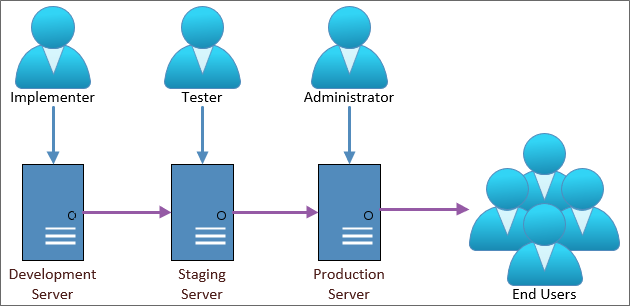
Content List Folders #
In Process Director, Content List Folders have two purposes.
First, they make it easier to establish permissions that allow different classes of users to access different Content List objects. The best practice is to set permissions only on folders, and not on individual Forms, Knowledge Views, Business Rules, etc. Permissions are inherited from parent objects, and when new child objects are created, they automatically have the same set of permissions as the folder in which they are contained. (If you change permissions on the folder, however, the permissions on objects within the folder won't be changed unless you click one of the “Replicate Current Permissions... buttons.)
Different folders might have different permissions to ensure that administrators, process managers, and users are only granted access to objects appropriate to their roles. For example, you might have certain Knowledge Views that only managers can access, while other Knowledge Views can be accessed by any user. In this case, you could create a Manager KViews and a User KViews folder. By setting the permissions of the Manager KViews folder to allow only Managers to view it, any Knowledge View that you place in the folder will inherit those permissions, and won't be accessible by other users.
It is important to remember, however, that permissions don't export. The first time you create a folder, manually or via the import process, you must explicitly set its permissions. Once you've done so, however, any new objects created or imported into the folder will automatically inherit the folder's permissions. (Remember to replicate permissions to child objects if the folder already contains objects.)
To use our example of the Manager KViews folder above, if you create new objects in the Manager KViews folder on Staging, then, when you reimport the folder to Production, all of the new objects will immediately be restricted to the permissions you set on the Manager KViews folder in the Production system. Because permissions don't export, you can set much less restrictive permissions on the Manager KViews folder in the Development environment to allow non-managers to test the system with non-sensitive data. When you re-import the folder to Staging and Production, the full set of access restrictions will be automatically applied to all the objects in the folder on the destination systems.
Folder Structure #
Structuring your folders properly makes it easier to deploy individual projects or implementations. As mentioned in the Creating Applications topic, the best practice for structuring folders is to organize them by application, and include subfolders for various Content List object types contained in the application. For instance, look at the sample structure below.
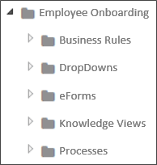
The image above is an example of structuring an implementation project logically. The top-level folder provides the name of the application you're modeling, in this case, a New Employee Onboarding process. All of the individual Forms, Knowledge Views, etc. are organized into the lower-level folders. With this type of organization, any changes you make to the application are contained inside this folder structure, which allows you to simply export the New Employee Onboarding folder, and import it into production, with all of its Content List objects intact, and without having to worry about interfering with any other application.
There are, of course, some exceptions to application-based organization. For instance, shared objects, like Datasources, Goals, and Business Values should probably each be grouped together in their own folder at the root level of the partition. You may have noticed that the Custom Tasks are organized in this fashion. You really shouldn't export/import Datasources between servers, to avoid mixing connections to test data with production data. The Data Sources should have exactly the same name, but the best practice is to create your Production and Staging Datasources manually. The important thing to remember is that you need to keep the folder structure exactly the same on your staging and production server, so that shared objects have the same relative paths on both servers.
Also, remember that any Datasources that are pointing to an external production system may need to be changed on the test server to point to an external test system. The same may be needed for some Custom Tasks that don't use a Datasource but connect to the external application directly, such as the Web Service CT. For the most part, this is important for external systems that are being updated from Process Director. If Process Director is just reading from the external system this may be less of an issue, but something you should keep in mind.
You may also want to create a root level Business Rules folder for those Business Rules that can be used in multiple projects. Business rules that are specific to a single project can be contained in the project's folder structure. Similarly, some common sub-processes might be organized into a root-level folder as well.
With the above in mind, a sample partition might look something like this:
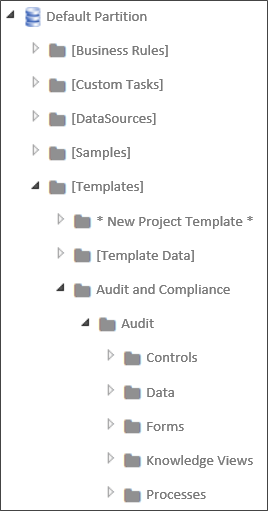
Notice that the root folder contains folders for all of the shared objects, as well as the high-level organization for different types of applications the organization has implemented. At the second level, the HR Process folder contains the individual applications for various Human Resource operations. Finally, at the third level, the New Employee Onboarding folder contains folders for all of the Content List objects that are needed to run that specific application. BP Logix recommends that you implement a similar type of folder structure to make importing/exporting projects (not to mention simply finding things) easier.
Users and Groups #
Users and User Groups aren't imported or exported in Process Director when exporting applications (though they can, of course, be imported and exported separately by system administrators, using the procedure described below. So, be sure that any test users or groups to which a project refers in the Development environment also exist in Staging and Production. If you are syncing users in all three systems from Active Directory, this won't usually be a problem. But there may be cases where you've manually created users in the Development system, and in such cases, the users will have to be manually created on, or exported to, the Staging and Production systems prior to the application.
So, make sure that all users match in your test and production environments. If they do not, and you attempt to import a project with a reference to a user that doesn't exist on the target system, an import error will occur. (Keep in mind, though, that explicit references to individual users within an application's Process Timeline activities aren't a good idea to begin with.)
Speaking of import errors, if an import throws an error or warning...stop. Fix the problem and try again. There are several errors that are common when importing, such as the user mismatch we just discussed. Another very common error is forgetting to add a Datasource for a dropdown that uses the Fill Dropdown from DB Custom Task. Commonly, the problem arises when you create a new Datasource on the development server, but neglect to create a matching Datasource on the production system before performing the import. The bottom line is that if you see an import error, your project didn't import properly, so you need to fix the problem and try to import it again.
Another important caution to remember is to avoid manually renaming any Content List object on the target system (such as the Production system) that may ever be updated via import. Doing so can result in no end of problems the next time you perform an import. If you do need to rename an object, you must do that manually on both the destination and source servers prior to doing the import. The development/staging/production objects must all have the same names.
To understand why, we need to delve down a bit into how Process Director tracks objects, and how the import process works. Process Director is database-driven, meaning that every single object in Process Director is stored in a database. The database uniquely identifies every object by assigning it a special identifier known as a Globally Unique Identifier (GUID). A GUIDGUIDs generated from random numbers are so large that the probability of the same number being generated randomly twice is negligible. Assuming uniform probability for simplicity, the probability of one duplicate would be about 50% if every person on earth owned 600 million GUIDs. (Wikipedia) is a 128 bit, 36 character value, and is a series of hexadecimalIn mathematics and computing, hexadecimal (also base 16, or hex) is a positional numeral system with a radix, or base, of 16. It uses sixteen distinct symbols, most often the symbols 0–9 to represent values zero to nine, and A, B, C, D, E, F (or alternatively a, b, c, d, e, f) to represent values ten to fifteen. (Wikipedia) numbers that are created using algorithms that ensure uniqueness. The GUID is generally represented in the format:
aa213c6f-a8aa-454f-a04d-30b56fd2e493
GUIDs don't mean anything to us humans, of course, so we always provide logical names, like "Manager KViews", that we humans can understand when we create objects. But, in almost every case, Process Director never uses the name. It always uses the GUID. Two important exceptions to GUID-based identification are import/export, and when referencing objects and controls via the system variable syntax, e.g. {RULE:RuleName}, {:FieldName}.
But, GUIDs can't be exported or imported because they are unique. An object on the Staging system will have a completely different GUID than the parallel object on the Production system. Since that is so, the import process has to try and match the logical name that we have given the object when performing an import.
So, to return to our Manager KViews folder, if we change the name of the folder on the Production system to Mgr KViews, then the next time we import from Staging, problems will arise. The import process will be looking to match the Manager KViews folder on Staging with the same folder on Production. Because we've changed the name on production, however, the import can't match the text "Mgr KView" to "Manager KView". It will, therefore, ignore the renamed Mgr KViews folder on the Production system, and create a new Manager KViews folder on import. Similar problems arise if you rename the folder on the Staging system before importing it to Production.
The new Manager KViews folder won't have any of the restrictive permissions you placed on the original folder. As far as the Production system is concerned, the newly-imported Manager KViews folder is a completely new folder, with the default permissions that will allow anyone to access it. You now have a security hole in your Production system, while the secured object has been orphaned, with all of the imported links now pointing to an unsecured folder.
So, it is vitally important to remember that you should only rename objects in the target environment when there is a real need, and if you do, you must manually rename it in the source environment.
Now, at this point, you might be thinking that you could simply delete the orphaned object. But wait, it gets worse.
If there are other objects on the production system that were not part of the import, and that were linked to the Mgr KViews folder when you renamed it, those links still exist. Those object links were not replaced with links to the Manager KView folder. So, now, your production system may have some objects linked to the Mgr KViews folder, while other objects are linked to the unsecured Manager KViews folder.
If you simply try to delete an orphaned object, the remaining links to orphaned object will now be broken, so you may break all of those related applications as well. But, even worse, when you delete an object, you also delete every instance of that object. That might not be a big deal if the object is just a Knowledge View, but if the object is a Process Timeline, Workflow, or Form, then every single instance of that object, and all of the data associated with those instances, will be deleted from the system. You have just deleted all of the historical data in your system for that process or Form. Also, you'll delete any link that any other object has to the object, so may destroy more than one application.
If you find yourself in a situation like the above, where you've renamed an object, performed an import, and now have two objects, you have two options. First, you can call BP Logix Technical Support for assistance, which is your best option. Second, you can try to fix the problem yourself by following the procedure below:
- Back up your Process Director database for the Production system.
- Identify the new objects that were just created on the Production system because they were renamed.
- Remove the new objects from Production.
- Rename the objects on Production so they match the Staging system.
- Re-import the objects.
With the above in mind, you may conclude that, as long as you aren't importing or exporting, you can rename or delete objects that don't have instances, like KViews or Business Rules, without running into problems. But, that's not completely true either, because, in addition to importing/exporting, there is one other case where the name of the object, rather than the GUID, is vitally important. Sometimes, you refer to objects through System Variables. For instance, you might have a condition in a process or Form that relies on the result of a Business Rule where you've used a System Variable to return the result, e.g., {RULE:RuleName}. System Variables are name-based, not based on the GUID. That means that if you rename or delete an object that is named in a System Variable, you'll break the object that uses the System variable as a reference.
The general rule, therefore, is that deleting object definition in the Content List of a Production system is an extraordinarily bad idea. If you do so, and eliminate vital historical data, then you have to try to restore your database which is a complicated and risky course of action.
So, to avoid the massive headaches any deletion can cause, only Partition Administrators should be able to delete anything on Production. Moreover, no actual user should ever be given Partition Administrator privileges, in order to ensure that no user can accidentally delete anything.
Instead, create a specific Partition Administrator account, and require administrative personnel to log out of their personal accounts and log into the Partition Administrator account before deleting anything. And even then, they should take extraordinary care before deleting an object. There are, in fact, a number of other security options you should consider as well, all of which can be found in the Securing Process Director section of the System Administrator's Guide.
Importing and Exporting Objects
Exporting Content List Objects
Process Director allows groups of objects (folders, documents, process definitions, etc.) to be exported or imported as a single file. This is needed when copying a Content List object/folder/application from a test system to a production server or importing Custom Tasks in to your system. It can also be used to backup entire Process Timelines as you are working on them. To export objects, check off the box next to the names of the files you wish to export, and click the Export action button.
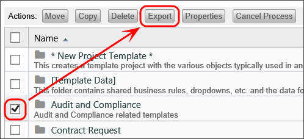
Prior to Process Director v5.25, exports were done in the XML format by default, though v4.55 and higher accepted exports/imports in the ZIP file format, with the ZIP file containing a compressed version of the XML export file. Process Director v5.20 and higher enables exports in the compressed PDZ file format by default. Users have the choice of selecting the ZIP file format for export to v4.55-v5.20, and XML format for all earlier versions of the product. The PDZ file format isn't a special or proprietary format. It 's actually a regular ZIP file, with the file extension simply changed from ZIP to PDZ (Process Director Zip) to indicate that it's a ZIP file containing a Process Director XML export. Renaming a PDZ file extension to ZIP will result in a normal ZIP archive file.
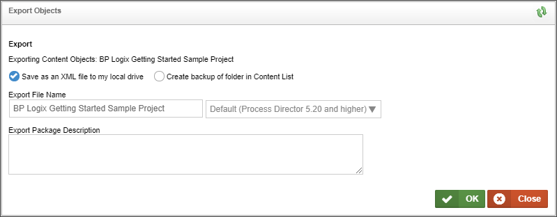
When you click the Export button, a dialog box will appear than enable you to make changes to the export file name or format. Clicking the OK button will begin the file export, which, for most browsers, will automatically export the file to the default Downloads folder n your local machine.
Content List items and Meta Data must be exported separately.
Importing Content List Objects
To import a file containing Content List objects, first navigate to the folder in the Content List where you want the imported item(s) to appear. Next, select Import Objects from the Create New dropdown located in the upper right portion of the Content List screen. Selecting this option will open an import dialog box.
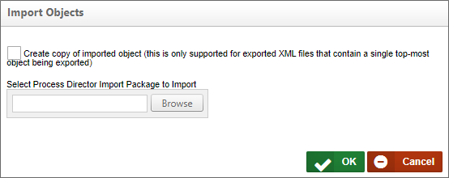
From this dialog, you can use the Browse button to browse to the location of the file, and select it. Once selected, clicking the OK button will begin the import process.
When the import process concludes, an import report will appear automatically.
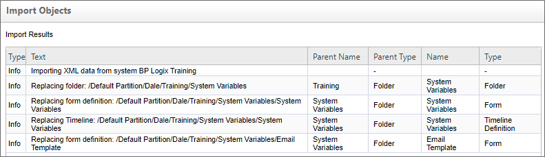
You should peruse this report to ensure there are no warnings or errors for the import. If there are, you should correct the errors, then re-import the objects until the errors and/or warnings are resolved.
Copying Objects
To create a copy of a folder within the Content List, first export the folder using the process described above. Doing so will create an XML file containing the exported information.
Next, import the XML file that you just created. When the import screen appears, check the box labeled "Create copy of imported object (this is only supported for exported XML files that contain a single top-most object being exported)". This will import the file as a copy of the existing item. If you don't select the checkbox, the import will overwrite the existing item.
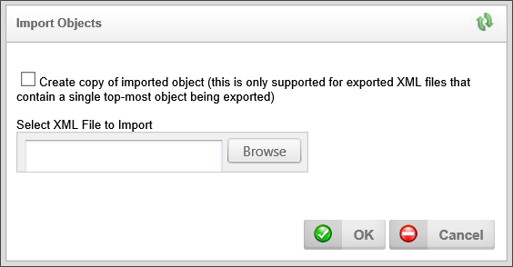
Please note that this "create copy" feature will only work when importing an XML (or PDZ) file that contains either a single folder as a top-level object, or a single Content List object. If you wish to import multiple Content List objects, therefore, they must be exported in a folder, not as a collection of individual objects. The exported folder can then be re-imported as a copy.
As a quick example, if your original folder is called "vacation request", the XML file you create through export will be called "vacation_request.pdz", and the new Content List folder you create through importing the XML file will be called "vacation request copy".
Importing / Exporting Users Using Excel
Users in Process Director can be exported to and imported from a Microsoft Excel spreadsheet. To export Process Director’s users to an Excel file, first ensure that you are logged in as an administrator. Navigate to IT Admin > User Administration > Users, and click on the Export Users link. If you only wish to export specific users, you can select those users by clicking the checkboxes next to their names, and then clicking Export Users.
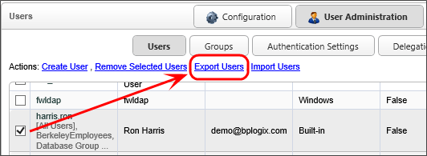
The resulting excel file should contain information about the users on this Process Director installation, and should look like this:

You can also include other columns that contain additional information about the user, such as contact information and information about the user’s role in the company.

The Manager field can refer to the Manager’s User ID, or Process Director’s internal oUID for that user.
We can then edit much of the information on the Excel file. We can change the names of the users in the UserName column, or their email addresses in the EmailAddress column. The Culture column specifies which language and time format and number format the user will view, and the TimeZone column specifies the user’s time zone, using .NET’s list of time zones. The column values for some common time zones are as follows:
- Pacific Standard Time (US and Canada West Coast, GMT-08:00)
- US Eastern Standard Time (United States East Coast, GMT-05:00)
- Greenwich Standard Time (UK, GMT)
- Central Europe Standard Time (Central Europe, GMT+01:00)
- Tokyo Standard Time (Japan, GMT+09:00)
- AUS Eastern Standard Time (Australian East Coast, GMT+10:00)
You also disable users and/or specify the date and time of their most recent log in. AuthType determines how the user authenticates, whether it’s through Windows, Process Director, or another method. The Groups column is a comma-separated list of columns to which the group belongs. UserIDs identify the users: they must be unique, as each different UserID specifies a different user.
After creating or editing an Excel file, we can import it into Process Director at the same page from which we exported the Excel file. After navigating to IT Admin > User Administration > Users, click on the Import Users link.
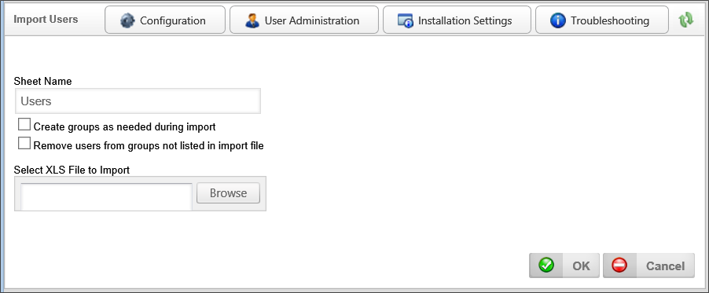
To import users, specify the name of the worksheet in the Excel file that contains information about the users. By default, the name of this worksheet is “Users”, and an Excel file created by Process Director will store the user data in a worksheet called “Users”.
Checking the “Create groups as needed during import” checkbox will automatically create groups for any group specified in the Excel file that doesn't currently exist in Process Director. If this checkbox is checked, and you add a user to a group that doesn’t exist, that group will be created upon import.
Checking the “Remove users from groups not listed in import file” checkbox removes users from groups unless it is specified in the file that they belong to that group. So, if in Process Director I have a user, Administrator, belonging to groups “admin” and “group2”, and I import a file that just specifies that the Administrator user belongs to the group “admin”, then, when this checkbox is checked, the user Administrator will be removed from group2 on import. Nothing happens to the group itself, but any user whose membership to that group isn't specified in the Excel file will be removed from that group.
Importing Custom Tasks
Custom Tasks may need to be periodically updated, as BP Logix updates or adds Custom Tasks on an ongoing basis. Custom Tasks are usually unrelated to any specific version of Process Director, though there are a few exceptions that require a specific product version to work properly. When upgrading the product to a new version, you may wish to upgrade the Custom Tasks after you complete the product upgrade.
To ensure proper installation and upgrade of the Custom Tasks review the following procedures:
Do not delete the current Custom Tasks unless you are sure you want to delete them. Deleting Custom Tasks will remove all Custom Task event mappings to any objects in the partition.
- To import Custom Tasks, ensure that you aren't inside of the [Custom Tasks] folder, or any of its subfolders, unless you are importing an individual Custom Task to a specific location.
Navigate to the root of the location of the Partition, The [Custom Tasks] folder should always reside in the Partition root, as shown below.:
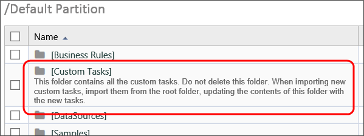
- Continue to import the Custom Tasks by selecting Import Objects from the Create New dropdown. Once you've selected the PDZ file to import, click OK. This will import and overwrite the current [Custom Tasks] folder with the new/updated Custom Tasks.
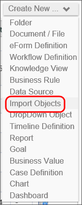
- Ensure that there are no duplicate [Custom Tasks] folders. If not, then you've successfully updated your Custom Tasks.
Exporting Form Instances
For users of Process Director v4.54 and higher, you can export form instances. This is a feature that enables a relatively rare use case where you need to create Form instances to store configuration data, and you want to export the form instance(s) containing the configuration data between systems.
 This feature is not designed to export regular form instances between systems, as it does not export the linkages to process instances or to any other objects. The export only exports the discrete form instances.
This feature is not designed to export regular form instances between systems, as it does not export the linkages to process instances or to any other objects. The export only exports the discrete form instances.
In the Content List, when viewing form instances, clicking the check box next to the form instance will show the action buttons, which now include an Export button.
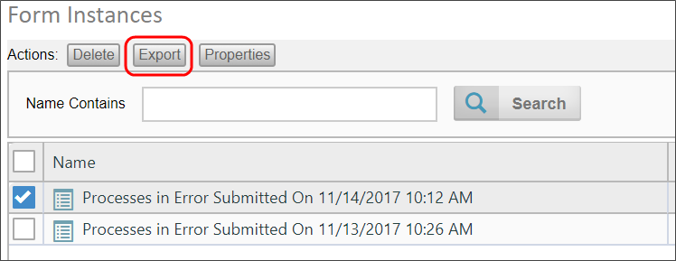
Complex Application Imports #
When creating a new application, there may be other Process Director objects, like Workspaces and Meta Data categories, created as part of the application. Exporting other Process Director Objects, like Workspaces or Partition Meta Data, is done from the IT Admin area of the installation, on the appropriate page for administering those item types. For example, to export a workspace, you must go to the Workspace page of the Configuration section to perform the export.
The process for exporting these objects is very similar to the method for exporting Content List items. Each object type must be exported separately, and are exported into their own separate PDZ files.
These associated objects will need to be imported separately from the Application folder, and the order in which these other objects are imported is critical to avoid import errors. Process Director objects exist in a hierarchy, where lower-level objects can only import correctly if the associated higher-level objects already exist on the system. For instance, if a Form has a Meta Data Category assigned to the Form Definition, you can't import the Form correctly unless that Meta Data category already exists on the target system.
While the order in which you import objects to a target system is important, the order in which you export the objects from the source system is not.
To perform complex import operations like these, the Process Director objects should be imported in the following order.
- Partition Meta Data: Meta data can be applied to any Process Director object, which means it sits at the highest level of the Hierarchy.
- Users/Groups: Any new users or groups that have been created on the source system, and that are used in the application, must be imported. Exports of Groups and Users are, unlike other objects, exported and imported as Excel files rather than PDZ files.
-
Partition-Level Content List Objects: If you have created additional Business Values, Dropdown Objects, or Business Rules that reside in the partition's "system" folders (e.g., [Business Values], [Business Rules], etc.), import them to the appropriate place in the Content List before importing the application. BP Logix does not recommend importing Datasource objects between systems. Instead, they should be manually created on the Production system, using the same name as they have on the Development/Staging systems. You should have a [Data Sources] folder at the partition root of all systems, which is where all Datasource objects should reside.
- Application Content List Objects: Once the higher-level objects have been imported, you can now import the PDZ file containing the application folder and all its contents.
- Workspaces: Workspaces are usually configured with specific groups or users assigned to them. Similarly, a Workspace may display an application Dashboard or Knowledge View, or have navigation buttons that reference application Forms. Importing Workspaces before importing the required objects will result in an import warning. The Workspace will be imported, but any missing users or groups or application objects will be removed from the Workspace.
Remember, failing to import objects in the proper order will result in import errors that will necessitate re-importing the objects.